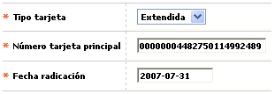

Novedad tarjeta principal a amparada/extendida/adicional
En este formulario invocado desde la opción
ingreso de novedades,
(issuer) y que aplica exclusivamente para tarjetas principales que no tengan
tarjetas dependientes a su cargo, la entidad puede efectuar el cambio para
convertir una tarjeta en dependiente de otra principal. Para esta novedad,
el sistema valida que entre el cliente de la tarjeta principal actual y el
cliente de la tarjeta principal con la cual se dese asociar exista un vínvulo
o relación.

Descripción de campos
Tipo tarjeta |
Campo
obligatorio tipo combo, en el que se selecciona entre Extendida,
Amparada o Adicional el tipo de tarjeta a la cual se desea
convertir la principal. |
Número
tarjeta principal
|
En
este campo obligatorio de hasta 23 caracteres se ingresa el número
de la tarjeta principal de la cual va quedar dependiendo la tarjeta
a la que se aplica la novedad. |
Fecha
radicación |
Campo
obligatorio en el que se registra en formato YYYY-MM-DD la fecha en
la cual se ingresó el cambio de tarjeta principal a dependiente
y que puede ser una fecha anterior a la actual del sistema, facilitando
el ingreso de novedades de fechas anteriores. |